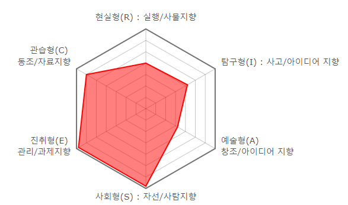
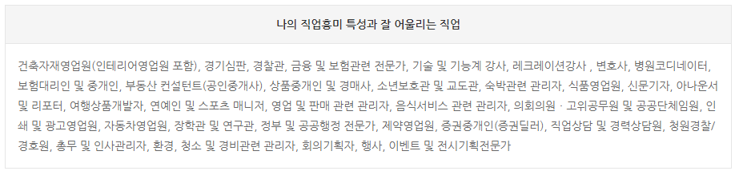

☰ PERSONALITY
Interest Code
Disposition figure

Analysis
현실형(R) : ★★★★★★★
명확하고 체계적이며 질서정연한 일을 좋아하고, 기존의 가치와 신념체계에 위배되지 않는 선에서 원칙적으로 행동한다.
전기나 기계, 공학분야와 같이 실제적이고 행동양식이 존재하는 분야를 선호한다.
사물을 다루고 조작하는 것을 좋아해 손재주가 있다는 평을 듣는 경우가 많고, 겸손하고 솔직하지만 학문과 창의적인 일에 서툴다고 여긴다.
탐구형(I) : ★★★★★★★
현상을 비판적이고 분석적으로 관찰하고, 체계적이고 창조적으로 탐구하는 것을 좋아한다.
규칙적이고 반복적인 활동이나 리더십을 발휘해야 하는 활동은 별로 좋아하지 않는다.
인간적 감정이나 사회적 환경 보다는 자연현상이나 사회현상에 대한 탐구활동에 대한 관심이 많다.
독립적이며 개방적인 태도로 정보를 수집하고 자료를 분석하며 현상에 대한 결론을 내리는 과정을 거쳐 문제를 해결하는 방식의 일을 선호한다.
예술형(A) : ★★★★★★★
창의적이고 유연한 사고를 즐겨하며 아름다움을 추구하는 경향이 강하다.
틀에 박힌 일이나 같은 패턴의 일, 변화가 없이 틀에 맞추어 해야 하는 일을 별로 좋아하지 않는다.
같은 사물이나 현상을 보고도 획일적으로 판단하지 않으며 상상력이 풍부하고 독창적인 편이다.
예술적 감수성이 뛰어나고 능력을 발휘하며 즐기는 반면, 명확하고 규칙적인 활동이나 객관적 사실을 추구하는 활동에는 약한 편이다.
개방적인 사고체계를 소유하고 있어 변화를 주도하고 추구하며 자신의 직감에 의존하여 문제를 해결하려는 경향이 있다.
사회형(S) : ★★★★★★★
타인의 문제를 듣고 공감하고, 도와주고, 치료해주는 것을 선호하며 사람을 상대하는 활동에 능숙하다.
일반적으로 이타적이며 자애롭고 배려심이 깊은 인물로 평가를 받는다.
사물을 지향하기 보다는 사람과 사람 사이의 관계에 주목하는 경향이 강하여, 다른 사람들에게 어떤 사실을 가르쳐주고 도와주거나 지원해주는 활동을 좋아한다.
진취형(E) : ★★★★★★★
자신이 기획하고 목표설정한 것을 실행시키는 데 탁월한 능력을 보이는 유형이다.
인과 조직의 목표를 달성하거나 경제적인 이익을 추구하기 위한 활동을 선호하며, 타인에게 영향력을 발휘하는 일을 하고 싶어 한다.
계획하고 목표설정하며 추진하고 있는 일을 성공적으로 이끌기 위해 다른 사람들을 설득하거나 협상을 하는 등 사회성을 발휘한다.
관습형(C) : ★★★★★★★
조직적이고 체계적이며 규칙과 시스템이 잡혀 있는 일을 좋아하고, 규정이나 시스템 등이 없이 불확실하고 애매하며 시시각각 변화하는 일을 피하려는 경향이 강하다.
수립되어 있는 시스템에 적응하여 규칙에 맞게 성실하고 분명하면서도 체계적으로 일을 하는 것을 좋아하여, 서류 작성 및 기록 등과 같은 사무적인 일에 능력을 발휘한다.
문제 상황에서 변화를 추구하거나 비판하기 보다는 조심스럽고 체계적으로 해결계획을 세우는 편이다.
Value & Job
Character
사회형(S) - 이해심 , 동정심 , 참을성 , 이타적인 성격
진취형(E) - 대담함 , 사교성 , 모험심 , 외향성 , 야심차고 열정적인 성격
관습형(C) - 현실성 , 성실성 , 안정지향적이고 유능한 성격
Value
타인의 복지와 사회적 서비스의 제공
경제적 성취와 사회적 지위
금전적 성취와 사회, 사업, 정치영역에서의 권력 획득
Job
